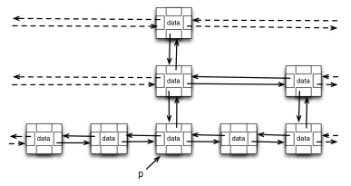

Following the directions below, write pseudocode for HASH-DELETE to delete
by writing a special DELETED value, and modify HASH-INSERT to handle the
DELETED value. You will write your response in the exact same form as the
book's pseudocode (shown).
1. Write HASH-DELETE by renaming HASH-SEARCH and adding or changing ONE line in the body.
Hash-Search (T,k) // rename to Hash-Delete and remove this line
i = 0
repeat
j = h(k,i)
if T[j] == k
return j
i = i + 1
until T[j] == NIL or i == m
return NIL
2. Write the new HASH-INSERT by changing only ONE line in the following.
Hash-Insert (T,k)
i = 0
repeat
j = h(k,i)
if T[j] == NIL
T[j] = k
return j
else i = i + 1
until i == m
error "hash table overflow"
3. What is the Θ runtime complexity of the worst case for the modified HASH-INSERT and HASH-DELETE in terms of n (number of elements stored) and m (table size)? (_ Describe the worst possible situation. Express its runtime with Θ. _)

SkipSearch(k) returns a pointer p to the bottom most element of the tower
you want to delete. Suppose this were passed to a method SkipDelete(p) −
notice it takes p as argument, not k. In this problem you analyze the
complexity of SkipDelete. Before you start the analysis, you should discuss
how it works! Then, if you have time, you can write pseudocode for it for
extra credit.
p.next, p.prev, p.above and p.below.SkipInsert(k,d) has built the skip list using random(0,1) with cutoff of 0.5. p, doing repeated deletion from each doubly linked list that the element occurs in. 4. Assuming a uniform distribution of keys stored in random order, what is the Θ expected case performance of SkipDelete in terms of n, the number of keys stored in the skiplist?
5. What is the probability that a given call to SkipDelete would have to delete at least _k nodes? (Hint: Think of the probability that SkipInsert builds a "tower" of k nodes for a given key._)
6. If you finish early, write the recursive pseudocode for SkipDelete(p).
Hint:
SkipDelete(p)
if p ≠ null {
// splice out of this doubly linked list
// recurse to splice out of list above
}